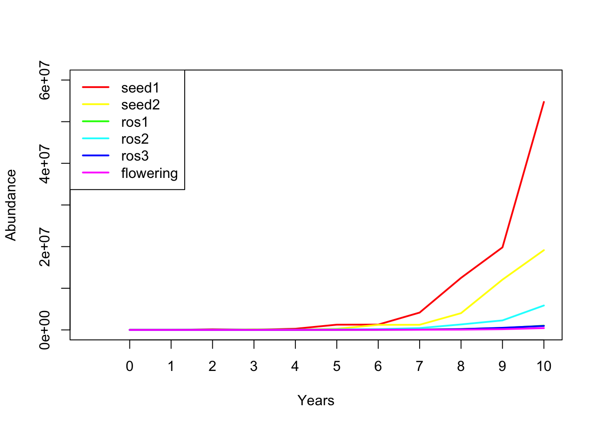
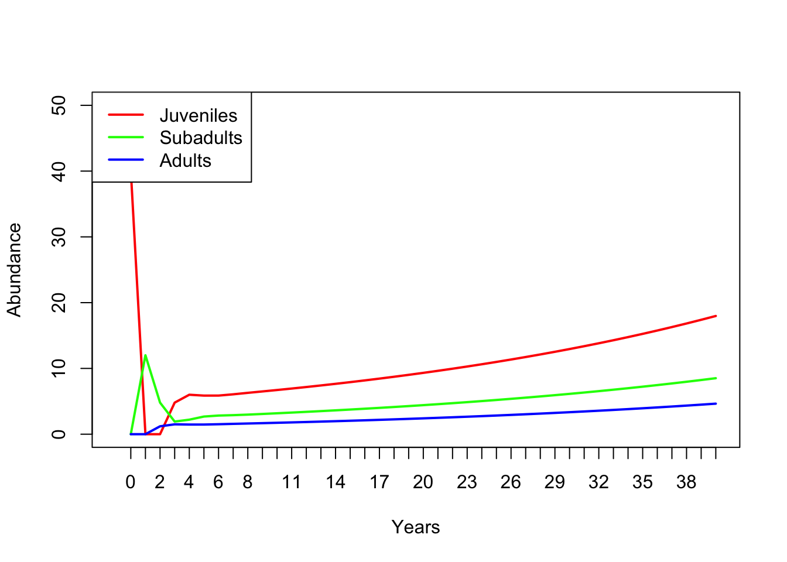

Modelos de matrices poblacionales
BIOL4558
Agosto 2021
Próximo examen parcial some date
Test date in the future real soon
No texto
El 6 de octubre
cuándo y dónde El primer examen parcial (de dos) se realizará el lunes 15 de marzo. Tendrás todo el período de clase de 120 minutos para realizar el examen. El examen será en línea (por supuesto) y se administrará en Edmodo.
qué El examen cubrirá:
- Todo el material de los capítulos 1-3 del libro de Gotelli incluidos los conceptos de modelos de población matricial .
- Todo el material cubierto en conferencias hasta e incluyendo esta conferencia sobre modelos matriciales de población.
- Ch. 1 de “Beyond Connecting the Dots” (pensamiento sistémico básico y modelado de flujo de existencias, conceptos de retroalimentación y equilibrios)
- Conceptos básicos de programación (IF-THEN-ELSE y de iteración)
El examen consistirá en una combinación de preguntas de opción múltiple y de respuesta corta.
Por favor traiga una calculadora; una calculadora científica normal está bien (no es absolutamente necesaria, ¡pero podría ser útil para al menos una pregunta del examen!)
Matrix population models
En primer lugar, esta lección está llena de código R (¡R es bastante bueno para ejecutar modelos de población matricial!). Si desea seguir en R, puede encontrar el script R aquí. Recomiendo hacer clic derecho en el enlace, guardar el script en una carpeta designada y cargar el script en RStudio.
¿Por qué matrices?
Reason 1: simplify!

Es posible que reconozca este modelo de InsightMaker. Esto representa una población estructurada por edad con solo tres clases de edad. Imagínese si hubiera cinco clases de edad o diez. ¿Qué pasaría si pudieras saltar de (por ejemplo) la etapa 3 a la etapa 5? ¿O de la etapa 5 a la etapa 3? ¿Cuántas líneas tendrías que dibujar, cuántas ecuaciones tendrías que poner en todos los diferentes flujos? Sería tedioso y fácilmente podría encontrarse con errores que serían muy difíciles de depurar.

Considere el ejemplo del teasel de nuestro libro de texto. Es posible implementar este modelo en InsightMaker, pero sería tedioso y potencialmente propenso a errores. Y esto está lejos de las poblaciones más complicadas que existen (aunque observe que las plantas pueden hacer algunas cosas que los animales no pueden hacer, por ejemplo, retroceder en la etapa de desarrollo. ¡Con los modelos matriciales, hay una manera más fácil!

Las tasas vitales de la población para casi cualquier población estructurada por edad o estructurada por etapas se pueden representar como una matriz de transición (o matriz de proyección), que resume toda la información sobre mortalidad, tasas de natalidad y transiciones entre etapas. (¡y el hecho de que una historia de vida como Teasel pueda representarse mediante una matriz de transición ilustra la generalidad de este concepto!)
Por ejemplo, las tasas vitales de teasel se pueden resumir en esta matriz:
#########
# Teasel example from Gotelli: summarizing a complex life history!
teasel <- read.csv("teaselmatrix1.csv", header=T) # read in the teasel transition matrix from Gotelli
teasel <- teasel[,-1] # remove the row names
teasel_matrix <- as.matrix(teasel) # convert to a matrix (from a data frame)
colnames(teasel_matrix) <- names(teasel) # assign row and column names
rownames(teasel_matrix) <- names(teasel)
teasel_matrix # print the matrix## seed1 seed2 ros1 ros2 ros3 flowering
## seed1 0.000 0.00 0.000 0.000 0.000 322.380
## seed2 0.966 0.00 0.000 0.000 0.000 0.000
## ros1 0.013 0.01 0.125 0.000 0.000 3.448
## ros2 0.007 0.00 0.125 0.238 0.000 30.170
## ros3 0.008 0.00 0.000 0.245 0.167 0.862
## flowering 0.000 0.00 0.000 0.023 0.750 0.000¿No es eso *elegante *?
¡Entraremos en más detalles sobre las matrices más adelante!
Supplementario: Matrices estructura por etapas vs. estructura por edades
En la conferencia anterior, hablamos de ‘poblaciones estructuradas por edad’. Lo que queremos decir con eso es que las tasas vitales de la población (por ejemplo, nacimiento y mortandad) variaban según la edad.
A veces, es conveniente clasificar a los individuos dentro de un cierto rango de edad como pertenecientes a una etapa particular de su historia de vida. Por ejemplo, podríamos clasificar la historia de vida de un oso pardo así:
Edad 0-1: recien nacidos
Edad 1-2: juveniles
Edad 2-5: sub-adulto
Edad 6+: adulto
Esto puede simplificar nuestros modelos considerablemente. Por ejemplo, considere una especie como una tortuga marina, con hasta 75 o 100 años de vida. Podría construir un modelo en el que tenga 100 acciones, una por cada año de vida. O, podría tener 5 o más poblaciones que representen rangos de edad en los que las tortugas marinas tienden a tener tasas vitales consistentes (mas o menos). Por ejemplo, podríamos dividir la historia de vida de las tortugas marinas en las siguientes etapas:
Edad 0-1: recien nacidos
Edad 1-5: juveniles joven
Edad 5-10: juvenile más grandes
Edad 10-17: sub-adult0
Edad 18+: adult0
Al usar etapas, hemos simplificado nuestro modelo de tener 100 acciones (con aún más flujos / transiciones asociadas) a un modelo con solo 5 acciones, y todavía estamos capturando cómo cambian las tasas vitales con la edad (el modelo sigue siendo biológicamente realista).
Los modelos matriciales de población pueden representar modelos estructurados por edades y estructurados por etapas con la misma simplicidad y elegancia.
La ‘Leslie Matrix’ comúnmente utilizada se refiere a un modelo de población matricial que representa una población estructurada por edad. Cuando se utiliza una matriz para representar una población estructurada por etapas, a menudo se la denomina Matriz ‘Lefkovitch’.
Razón 2: ¡proyección!
En una de las preguntas del laboratorio 3, se le pidió que usara una tabla de vida para proyectar la estructura de edad de una población en un paso de tiempo en el futuro. ¿Fue sencillo y directo hacer esto? (respuesta: ¡¡NO !!)
Las tablas de vida son excelentes para resumir los cronogramas de supervivencia y otros aspectos de las poblaciones estructuradas por edad. ¡Pero las tablas de vida no son excelentes para proyectar la abundancia estructurada por edades en el futuro!
¿Sabes qué es genial para proyectar la abundancia estructurada por edades en el futuro? (respuesta obvia: MATRICES!)
Por ejemplo, proyectemos una población de teasel 1 año en el futuro:
En primer lugar, debemos comenzar con una población de teasel vector …
#############
# Summarize initial age-structured abundance as a matrix with one column
Initial_teasel <- matrix(c(1000,1500,200,300,600,25),ncol=1) # initial population size (population vector; matrix with 1 column!)
rownames(Initial_teasel) <- rownames(teasel_matrix) # add row and column names
colnames(Initial_teasel) <- "Abundance"
Initial_teasel## Abundance
## seed1 1000
## seed2 1500
## ros1 200
## ros2 300
## ros3 600
## flowering 25¡Entonces todo lo que tenemos que hacer es ‘multiplicar por matriz’ este vector de abundancias por la matriz de transición de arriba! ¡Cada vez que hacemos este paso de multiplicación, avanzamos un año! ¡Es fácil!
NOTA: la multiplicación de matrices (porcentaje-asterisco-porcentaje en R) no es lo mismo que la multiplicación estándar (asterisco en R). Repasaremos esto en la introducción al laboratorio 4 un poco más adelante.
¡Así es como podemos hacer esto en R!
#########
# Project the population at time 1
Year1 <- teasel_matrix %*% Initial_teasel # note: the '%*%' denotes 'matrix multiplication' in R. We'll go through this more later.
Year1## Abundance
## seed1 8059.50
## seed2 966.00
## ros1 139.20
## ros2 857.65
## ros3 203.25
## flowering 456.90¿Qué tan fácil es eso ?
Para calcular la abundancia de carmesí en el año 2 de nuestra simulación, simplemente podemos repetir:
#########
# Project the population at time 2
thisYear <- Year1
nextYear <- teasel_matrix %*% thisYear
nextYear # now we get the (age structured) population size at time 2! ## Abundance
## seed1 147295.4220
## seed2 7785.4770
## ros1 1707.2247
## ros2 14062.6102
## ros3 702.3908
## flowering 172.1635Podríamos usar esta estrategia para simular la abundancia durante diez años (o 20, o 30, o 10000) …
¡Observe el uso de un loop aquí!
########
# Use a for loop to project the population dynamics for the next 10 years!
nYears <- 10
tenYears <- matrix(0,nrow=6,ncol=nYears+1) # initialize storate array for recording age structured abundances for the next 10 years.
rownames(tenYears) <- rownames(Initial_teasel) # assign row and column names
colnames(tenYears) <- seq(0,10)
tenYears[,1] <- Initial_teasel # initialize the simulated abundances
##########
# run the for loop!
for(t in 2:(nYears+1)){ # here we use 't' as our looping variable, but we could choose any name we want
tenYears[,t] <- teasel_matrix %*% tenYears[,t-1] # perform matrix multiplication for each year of the simulation!
}
tenYears## 0 1 2 3 4 5
## seed1 1000 8059.50 147295.4220 55502.0530 274098.158 1254742.541
## seed2 1500 966.00 7785.4770 142287.3777 53614.983 264778.821
## ros1 200 139.20 1707.2247 2799.7179 5425.969 18197.711
## ros2 300 857.65 14062.6102 9785.5436 28718.972 126857.393
## ros3 600 203.25 702.3908 4889.4070 4390.907 13317.225
## flowering 25 456.90 172.1635 850.2331 3892.123 3953.716
## 6 7 8 9 10
## seed1 1274599.05 4160519.75 12493783.29 19821259.9 54739267.1
## seed2 1212081.29 1231262.68 4019062.08 12068994.7 19147337.1
## ros1 34866.57 77547.56 209719.50 440822.1 1018930.3
## ros2 160533.59 440850.62 1312972.86 2281135.7 5859547.7
## ros3 46750.08 68459.45 186131.95 505712.0 948267.5
## flowering 12905.64 38754.83 61484.15 169797.3 431750.1¡Finalmente, podemos trazar la abundancia de cada etapa durante 10 años!

¡Así que la proyección es fácil con matrices!
Razón 3: ¡Trucos de álgebra matricial!
Existe una clara similitud entre la ecuación de crecimiento de la población finita:
\(N_{t+1}=\lambda \cdot N_t\),
donde $N $ es abundancia (como siempre), \(t\) es el tiempo, a menudo en años, pero podría ser cualquier unidad de tiempo, y \(\lambda\) es la tasa de crecimiento multiplicativo durante el período de tiempo \(t \ rightarrow t + 1\)
… y la ecuación matricial de crecimiento de la población:
\(\mathbf{N}_{t+1} = \mathbf{A} \cdot \mathbf{N}_{t}\),
donde \(\mathbf {N}\) es un ** vector ** de abundancias (abundancia para todas las etapas), y \(\mathbf{A}\) es la matriz de transición, que hemos visto antes.
Q: ¿Puedes ver la similitud entre estas dos ecuaciones?
Ambas ecuaciones describen un crecimiento o una disminución exponencial simple.
Q: ¿Puedes ver la diferencia entre estas dos ecuaciones?
Tenga en cuenta que $N $ en la primera ecuación es un escalar , es decir, es solo un número desnudo sin componentes adicionales.
MIENTRAS QUE,
\(\mathbf{N}\) en la segunda ecuación es un vector estructurado por edad: un conjunto de abundancias estructurado por edad o clase de etapa.
De manera similar, la tasa de crecimiento de la población finita, $$ es un escalar,
MIENTRAS QUE,
$ $ es una matriz (la matriz de transición)
¿Qué pasa con esos trucos que prometiste?
Okay one of the tricks is this:
In one step, you can compute \(\lambda\) from \(\mathbf{A}\)!!
All you need to do is obtain the first, or dominant, eigenvalue of \(\mathbf{A}\)! This number is the finite rate of growth, \(\lambda\), for an age or stage-structured population.
Recall that when a population is at stable age distribution, it grows in a discrete exponential growth pattern- this rate of exponential growth can be described by a single parameter – Lambda!
¡Hagamos esto en R!
¿Cuál es la tasa de crecimiento $ lambda $ para la población de teasel? Si recuerda, parecía que estaba creciendo, por lo que debería estar por encima de 1 …
###########
# Utilice la matriz de transición para calcular Lambda, o la tasa finita de crecimiento de la población.
Lambda <- as.numeric(round(eigen(teasel_matrix)$values[1],2))
Lambda## [1] 2.32O podríamos usar el paquete “popbio” en R:
library(popbio) # or... it's easier to use the 'popbio' library in R!
lambda(teasel_matrix)## [1] 2.32188No es necesario que comprenda las matemáticas aquí, pero quiero que comprenda lo simple que fue, ¡solo una línea de código y calculamos la tasa anual de crecimiento a partir de la matriz de transición de teasel!
Aquí hay otro truco ingenioso:
En un solo paso, puede calcular distribución de edad estable (S.A.D) a partir de \(\mathbf{A}\)!!
¡Todo lo que necesita hacer es obtener el eigenvectoc derecho de \(\mathbf{A}\)! Este vector representa las abundancias relativas en cada clase de edad en la distribución de edad estable.
¡Hagamos esto en R!
¿Cuál es la distribución de edad estable para la población de cardo? Si recuerda, la primera etapa inicial parecía dominar en la figura anterior.
##########
# Calcule la distribución de edad estable a partir de la matriz de transición
SAD <- abs(as.numeric(round(eigen(teasel_matrix)$vectors[,1],3)))
SAD/sum(SAD) # stable age distribution as a percentage of the total population## [1] 0.636615811 0.264909847 0.012482663 0.069348128 0.011789182 0.004854369O podríamos usar el paquete “popbio” en R:
library(popbio) # ... y es aún más fácil si usamos el paquete 'popbio'...
stable.stage(teasel_matrix)## seed1 seed2 ros1 ros2 ros3 flowering
## 0.636901968 0.264978062 0.012174560 0.069281759 0.012076487 0.004587164Q: ¿Una población estructurada por etapas crece a una tasa de $ lambda $ por paso de tiempo si NO tiene una distribución de edad estable? [Edmodo]
Para responder a esta pregunta, puede que le resulte útil cargar un modelo estructurado por etapas en InsightMaker como this one).
Mechanics of matrix population models
Echemos un vistazo a una población básica estructurada por edad, específicamente el ejemplo en clase de la última conferencia. (this one.). Echemos un vistazo a una población básica estructurada por edad, específicamente el ejemplo en clase de la última conferencia.

Convirtamos las tasas vitales a una matriz de proyección de tres etapas. Las matrices de proyección son matrices cuadradas donde el número de filas y columnas es igual al número de etapas de la vida. En este caso, ¡eso significa tres! Hagamos una matriz en blanco por ahora:
###################
# Demostración en clase: convierta un modelo insightmaker en un modelo de proyección matricial
###########
# Primero, especificamos una matriz de transición en blanco
TMat <- matrix(0,nrow=3,ncol=3) # create a blank matrix with 3 rows and 3 columns
stagenames <- c("Juveniles","Subadults","Adults") # name the rows and columns
rownames(TMat) <- stagenames
colnames(TMat) <- stagenames
TMat # now we have an all-zero transition matrix.## Juveniles Subadults Adults
## Juveniles 0 0 0
## Subadults 0 0 0
## Adults 0 0 0Puede leer los elementos de una matriz de transición de la siguiente manera:
“La producción per cápita de (nombre de la fila) por (nombre de la columna) es (valor del elemento)”
Ahora podemos comenzar a completar esta matriz. Comencemos con el elemento superior izquierdo de la matriz. Esto representa la producción per cápita de Juveniles (col) por Juveniles (fila). ¿Cuál es el valor de este elemento?
Actualicemos nuestra matriz de transición:
#####
# fill in the top left element of the matrix
TMat[1,1] <- 0
TMat## Juveniles Subadults Adults
## Juveniles 0 0 0
## Subadults 0 0 0
## Adults 0 0 0¿Qué tal la segunda fila, la primera columna? Esto representa la producción per cápita de subadultos (fila) por juveniles del año anterior (col). Es decir, la tasa de transición de juvenil a subadulto. El valor de nuestro modelo es 0,3.
Actualicemos nuestra matriz de transición:
#####
# actualizar la segunda fila, primera columna
TMat[2,1] <- 0.3
TMat## Juveniles Subadults Adults
## Juveniles 0.0 0 0
## Subadults 0.3 0 0
## Adults 0.0 0 0Si continuamos, obtenemos la siguiente matriz. Vea si puede entender lo que dice esta matriz sobre las transiciones y dos de las tres etapas de la vida.
#####
# y sigue llenándolo...
TMat[,1] <- c(0,0.3,0) # fill in the entire first column of the transition matrix
TMat[,2] <- c(0,0.4,0.1) # fill in the entire second column of the transition matrix
TMat[,3] <- c(4,0,0.85) # fill in the entire third column of the transition matrix
TMat## Juveniles Subadults Adults
## Juveniles 0.0 0.0 4.00
## Subadults 0.3 0.4 0.00
## Adults 0.0 0.1 0.85Ahora podemos ejecutar una proyección de 40 años y compararla con el modelo InsightMaker. ¡¡Será mejor que tenga el mismo aspecto !!
Primero debemos especificar las abundancias iniciales en cada etapa:
######
# especificar vector de abundancia inicial
InitAbund <- c(40,0,0)
names(InitAbund) <- colnames(TMat)
InitAbund## Juveniles Subadults Adults
## 40 0 0Así que empezamos solo con menores…
#######
# Ejecute el modelo durante 40 años (usando for loop)
nYears <- 40
allYears <- matrix(0,nrow=nrow(TMat),ncol=nYears+1)
rownames(allYears) <- rownames(TMat)
colnames(allYears) <- seq(0,nYears)
allYears[,1] <- InitAbund
for(t in 2:(nYears+1)){
allYears[,t] <- TMat %*% allYears[,t-1]
}
allYears## 0 1 2 3 4 5 6 7 8 9
## Juveniles 40 0 0.0 4.80 6.000 5.86800 5.871000 6.063630 6.287558 6.502333
## Subadults 0 12 4.8 1.92 2.208 2.68320 2.833680 2.894772 2.976998 3.077066
## Adults 0 0 1.2 1.50 1.467 1.46775 1.515907 1.571889 1.625583 1.679445
## 10 11 12 13 14 15 16
## Juveniles 6.717782 6.940941 7.172411 7.411727 7.658952 7.914392 8.178354
## Subadults 3.181526 3.287945 3.397460 3.510707 3.627801 3.748806 3.873840
## Adults 1.735235 1.793103 1.852932 1.914738 1.978598 2.044588 2.112781
## 17 18 19 20 21 22 23
## Juveniles 8.451123 8.732991 9.024259 9.325242 9.636263 9.957658 10.289772
## Subadults 4.003042 4.136554 4.274519 4.417085 4.564407 4.716641 4.873954
## Adults 2.183248 2.256065 2.331310 2.409066 2.489414 2.572443 2.658241
## 24 25 26 27 28 29 30
## Juveniles 10.632962 10.987600 11.354065 11.732753 12.124071 12.528440 12.946297
## Subadults 5.036513 5.204494 5.378077 5.557450 5.742806 5.934344 6.132270
## Adults 2.746900 2.838516 2.933188 3.031018 3.132110 3.236574 3.344522
## 31 32 33 34 35 36 37
## Juveniles 13.378090 13.824284 14.285360 14.761814 15.254160 15.762926 16.288661
## Subadults 6.336797 6.548146 6.766543 6.992225 7.225434 7.466422 7.715446
## Adults 3.456071 3.571340 3.690454 3.813540 3.940731 4.072165 4.207983
## 38 39 40
## Juveniles 16.831930 17.393319 17.973432
## Subadults 7.972777 8.238690 8.513472
## Adults 4.348330 4.493358 4.643223¡Ahora trazémoslo!
#####
# and plot out the results!
plot(1,1,pch="",ylim=c(0,50),xlim=c(0,nYears+1),xlab="Years",ylab="Abundance",xaxt="n")
cols <- rainbow(3)
for(s in 1:3){
points(allYears[s,],col=cols[s],type="l",lwd=2)
}
axis(1,at=seq(1,nYears+1),labels = seq(0,nYears))
legend("topleft",col=cols,lwd=rep(2,3),legend=rownames(allYears))
¿Tiene el mismo aspecto que los resultados de InsightMaker?
Limitaciones de los modelos matriciales de población
Los modelos de población matricial son excelentes, pero también tienen algunas limitaciones.
¿Qué pasa con la dependencia de la densidad?
De alguna manera, mientras introducimos un nuevo nivel de realismo en nuestros modelos, la estructura por edades, hemos estado ignorando otro tipo de realismo que introdujimos en conferencias anteriores: ¡dependencia de la densidad!
¿Qué tasas vitales dependen de la densidad? ¿Todas? ¿Algunos? ¿Depende? ¿Están disponibles los datos?
¿Cómo se incorpora la dependencia de la densidad en un modelo de población matricial?
¿Cómo se incorpora la dinámica depredador-presa en un modelo de población matricial? [señal de explosión cerebral]
¿Cómo incluir variación ambiental?
¿Cómo incluir variación espacial?
¿Considerando variación en las categorias?
¿Que haces cuando no hay información sobre una de los parametros de la matriz?
Todo lo que pueda hacer con un modelo de población matricial, también puede hacerlo en InsightMaker (o R, o cualquier otra plataforma de programación) (¡pero puede que no sea tan ‘bonito’ o elegante como un modelo de población matricial!)
The reverse is NOT true: you can not always convert InsightMaker models to matrix population models (IM is a programming language, so is much more flexible!)
Repaso de la multiplicación de matrices
(during lab!)
Ejercicio en clase: modelos de proyección matricial
Traduzca el siguiente párrafo a un modelo de población matricial. Recuerde que un modelo de población matricial tiene dos componentes: un ** vector de abundancia inicial ** y una ** matriz de transición **.
NOTA: ¡esta también es una pregunta en el laboratorio 4!

Asumimos que la historia de vida del halcón de cola roja podría describirse en términos de tres etapas principales de la vida: cría (primer año de vida), juvenil (principalmente individuos en su segundo año de vida) y adulto (generalmente el tercer año de vida). y más allá). Los adultos son la etapa reproductiva primaria y producen un promedio de 3 nuevas crías cada año. Se espera que los juveniles produzcan solo 1 cría nueva cada año. Asumimos que los adultos experimentaron un promedio de 18% de mortalidad cada año. La mortalidad juvenil se fijó en un 30% anual. Aproximadamente el 5% de los juveniles permanecen en la fase juvenil cada año, y todos los demás sobrevivientes pasan a la etapa adulta. Finalmente, las crías tenían un 20% de posibilidades de sobrevivir y hacer la transición para convertirse en juveniles. Inicializamos la población con 1000 crías, 150 juveniles y 5 adultos.
P: ¿Cómo se ve la matriz de transición? [EDMODO]
P: ¿Cómo se ve el vector de abundancia de la etapa inicial?
P: ¿Se encuentra esta población en una distribución por etapas estable?
P: ¿Cuál es la tasa de crecimiento de esta población?
Para obtener más información sobre los modelos matriciales de población, la Biblia de este tema es this book by Hal Caswell. Y finalmente, mira esto: esta es una base de datos de miles de matrices de etapas para plantas y animales en todo el mundo: